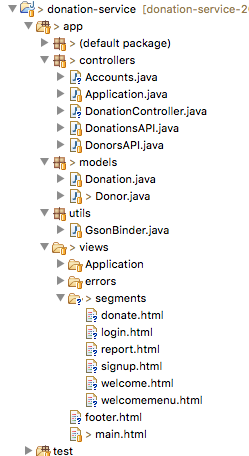
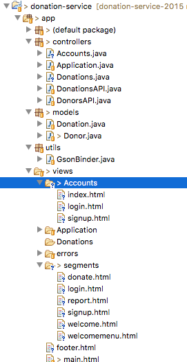

Donation UI
Using the latest Semantic UI, introduce a simple but well structured User Interface into the donation-service-play application.
donation-service
For this lab, you should be able to continue using the donation-service play project you already have running.
This app hosts the API for our donation service, but as yet it has no UX. This lab will build a sample UX.
Semantic UI
Instead do downloading and incorporating the Semantic UI libraries into our application - as we may have done heretofore - it may be more effective to load the semantic assets from a content delivery network. This one is popular:
and it hosts the semantic libraries:
These is the latest version we need:
//cdnjs.cloudflare.com/ajax/libs/semantic-ui/2.1.6/semantic.min.css
//cdnjs.cloudflare.com/ajax/libs/semantic-ui/2.1.6/semantic.min.jsIn the donation-service project, these links will need to be introduced into main.html (note we are including jquery as well, which must appear before the semantic includes). Semantic UI needs some javascript to initialise the controls you may uses. We will need radio buttons, dropdown and a progress bar. This fragment can be included at the end of the main.html file:
<script>
$(document).ready(function()
{
$('.ui.dropdown').dropdown({on: 'hover' });
$('.progress').progress();
});
</script>We will also introduce a footer:
views/footer.html
<div class="ui divider"></div>
<footer class="ui divided horizontal footer link list">
<div class="item">Donation Studios 2015</div>
<div class="item">
Built using <a href="http://www.semantic-ui.com" target="_blank">Semantic ui</a>
</div>
<div class="item">
and the <a href="http://www.playframework.com" target="_blank">Play Framework</a>
</div>
</footer>This leads us to the complete views/main.html, replacing the existing one:
<!DOCTYPE html>
<html>
<head>
<title>#{get 'title' /}</title>
<meta charset="UTF-8">
<script type="text/javascript"src="//cdnjs.cloudflare.com/ajax/libs/jquery/2.1.1/jquery.min.js"></script>
<script type="text/javascript" src="//cdnjs.cloudflare.com/ajax/libs/semantic-ui/2.1.6/semantic.min.js"></script>
<link rel="stylesheet" media="screen" href="//cdnjs.cloudflare.com/ajax/libs/semantic-ui/2.1.6/semantic.min.css">
<link rel="stylesheet" media="screen" href="@{'/public/stylesheets/main.css'}">
<link rel="shortcut icon" type="image/png" href="@{'/public/images/favicon.png'}">
</head>
<body>
<section class="ui container">
#{doLayout /}
#{include "footer.html" /}
</section>
<script>
$(document).ready(function()
{
$('.ui.dropdown').dropdown({on: 'hover' });
$('.progress').progress();
});
</script>
</body>
</html>Routes
We already have out REST routes in place:
# Home page
GET / Application.index
GET /api/donors DonorsAPI.getAllDonors
GET /api/donors/{id} DonorsAPI.getDonor
POST /api/donors DonorsAPI.createDonor
DELETE /api/donors/{id} DonorsAPI.deleteDonor
DELETE /api/donors DonorsAPI.deleteAllDonors
GET /api/donations DonationsAPI.getAllDonations
DELETE /api/donations DonationsAPI.deleteAllDonations
GET /api/donors/{id}/donations DonationsAPI.getDonations
GET /api/donors/{id}/donations/{donationId} DonationsAPI.getDonation
POST /api/donors/{id}/donations DonationsAPI.createDonation
DELETE /api/donors/{id}/donations/{donationId} DonationsAPI.deleteDonationWe will leave these in place.
Delete the first / route:
GET / Application.indexReplacing with a new home page + set of routes for the UI
# Home page
GET / Accounts.index
# Accounts page
GET /signup Accounts.signup
GET /login Accounts.login
GET /logout Accounts.logout
POST /authenticate Accounts.authenticate
POST /register Accounts.register
# Donation pages
GET /donation Donations.index
POST /donation/donate Donations.donate
GET /donation/report Donations.renderreportWe will need some convenience methods in the Donor model class:
User
public static Donor findByEmail(String email)
{
return find("email", email).first();
}
public boolean checkPassword(String password)
{
return this.password.equals(password);
}Imagery
Our UI will make use of some imagery - these images should be saved to the public/images folder:


Controllers
We have controllers to service the API. These two controllers will service the conventional web UI:
controllers/Donations
package controllers;
import play.*;
import play.mvc.*;
import java.util.*;
import models.*;
public class Donations extends Controller
{
public static void index()
{
Donor donor = Accounts.getCurrentUser();
String prog = getPercentTargetAchieved();
String progress = prog;
Logger.info("Donation ctrler : user is " + donor.email);
Logger.info("Donation ctrler : percent target achieved " + progress);
List<Donation> donations = donor.donations;
render(donor, progress, donations);
}
public static void donate(int amountDonated, String methodDonated)
{
Donor donor = Accounts.getCurrentUser();
Logger.info("amount donated " + amountDonated + " " + "method donated " + methodDonated);
Donation donation = new Donation(amountDonated, methodDonated);
donor.donations.add(donation);
donor.save();
index();
}
private static long getDonationTarget()
{
return 20000;
}
public static String getPercentTargetAchieved()
{
List<Donation> allDonations = Donation.findAll();
long total = 0;
for (Donation donation : allDonations)
{
total += donation.amount;
}
long target = getDonationTarget();
long percentachieved = (total * 100 / target);
String progress = String.valueOf(percentachieved);
Logger.info("Percent of target achieved (string) " + progress + " percentachieved (long)= " + percentachieved);
return progress;
}
public static void renderreport()
{
Donor donor = Accounts.getCurrentUser();
List<Donation> donations = donor.donations;
render(donations);
}
}controllers/Accounts
package controllers;
import play.*;
import play.mvc.*;
import models.*;
public class Accounts extends Controller
{
public static void index()
{
render();
}
public static void signup()
{
render();
}
public static void register(boolean usCitizen, String firstName, String lastName, String email, String password)
{
Logger.info( firstName + " " + lastName + " " + email + " " + password);
Donor user = new Donor(firstName, lastName, email, password);
user.save();
index();
}
public static void login()
{
render();
}
public static void logout()
{
session.clear();
index();
}
public static void authenticate(String email, String password)
{
Logger.info("Attempting to authenticate with " + email + ":" + password);
Donor user = Donor.findByEmail(email);
if ((user != null) && (user.checkPassword(password) == true))
{
Logger.info("Successfull authentication of " + user.firstName + " " + user.lastName);
session.put("logged_in_userid", user.id);
DonationController.index();
}
else
{
Logger.info("Authentication failed");
login();
}
}
public static Donor getCurrentUser()
{
String userId = session.get("logged_in_userid");
if (userId == null)
{
index();
}
Donor logged_in_user = Donor.findById(Long.parseLong(userId));
Logger.info("In Accounts controller: Logged in user is " + logged_in_user.firstName);
return logged_in_user;
}
}Account Segment Views
We will break up the UI into more fine grained components. In the App/views folder, create a new folder called 'segments' and introduce these files:
- login.html
- signup.html
- welcome.html
- welcomemenu.html
The project looks like this now:

These are the contents:
views/segments/welcome.html
<section class="ui stacked segment">
<div class="ui grid">
<aside class="six wide column">
<img src="/public/images/homer.png" class="ui medium image">
</aside>
<article class="ten wide column">
<header class="ui header"> Help Me Run Springfield </header>
<p> Donate what you can now - No Bitcoins accepted! </p>
</article>
</div>
</section>views/segments/signup.html
<section class="ui raised segment">
<div class="ui grid">
<div class="ui ten wide column">
<div class="ui stacked fluid form segment">
<form action="/register" method="POST">
<h3 class="ui header">Register</h3>
<div class="two fields">
<div class="field">
<label>First Name</label>
<input placeholder="First Name" type="text" name="firstName">
</div>
<div class="field">
<label>Last Name</label>
<input placeholder="Last Name" type="text" name="lastName">
</div>
</div>
<div class="field">
<label>Email</label>
<input placeholder="Email" type="text" name="email">
</div>
<div class="field">
<label>Password</label>
<input type="password" name="password">
</div>
<button class="ui blue submit button">Submit</button>
</form>
</div>
</div>
<aside class="ui five wide column">
<img src="/public/images/homer3.png" class="ui medium image">
</aside>
</div>
</section>views/segments/login.html
<section class="ui raised segment">
<div class="ui grid">
<aside class="ui six wide column">
<img src="/public/images/homer2.png" class="ui medium image">
</aside>
<div class="ui ten wide column fluid form">
<div class="ui stacked segment">
<form action="/authenticate" method="POST">
<h3 class="ui header">Log-in</h3>
<div class="field">
<label>Email</label> <input placeholder="Email" type="text"
name="email">
</div>
<div class="field">
<label>Password</label> <input type="password" name="password">
</div>
<button class="ui blue submit button">Login</button>
</form>
</div>
</div>
</div>
</section>views/segments/welcomemenu.html
<nav class="ui inverted menu">
<header class="header item"> <a href="/"> Donation </a> </header>
<div class="right menu">
<a class="item" href="/signup"> Signup</a>
<a class="item" href="/login"> Login</a>
</div>
</nav>These are all Html 5 semantic elements that we will build the Accounts UX from.
Donation Segment Views
Here are templates to service the Donation Controller's views:
Views/segments/donate.html
<section class="ui raised segment">
<div class="ui grid ">
<div class="ui form six wide column">
<div class="ui stacked segment">
<form action="/donation/donate" method="POST">
<div class="ui dropdown" name="amount">
<input type="hidden" name="amountDonated">
<div class="text">Select Amount</div>
<i class="dropdown icon"></i>
<div class="menu">
<div class="item">50</div>
<div class="item">100</div>
<div class="item">1000</div>
</div>
</div>
<div class="grouped inline fields">
<div class="field">
<div class="ui radio checkbox">
<input type="radio" name="methodDonated" value="paypal">
<label>Paypal</label>
</div>
</div>
<div class="field">
<div class="ui radio checkbox">
<input type="radio" name="methodDonated" value="direct">
<label>Direct</label>
</div>
</div>
</div>
<button class="ui blue submit button">Donate</button>
</form>
</div>
</div>
<aside class="six wide column">
<img src="/public/images/homer4.jpeg" class="ui medium image">
</aside>
</div>
</section>Views/segments/report.html
<section class="ui raised segment">
<div class="ui grid">
<aside class="six wide column">
<img src="/public/images/homer5.jpg" class="ui medium image">
</aside>
<article class="eight wide column">
<table class="ui celled table segment">
<thead>
<tr>
<th>Amount</th>
<th>Method donated</th>
</tr>
</thead>
<tbody>
#{list items:donations, as:'donation'}
<tr>
<td>${donation.amount}</td>
<td>${donation.method}</td>
</tr>
#{/list}
</tbody>
</table>
</article>
</div>
</section>Accounts Views
With the segment building blocks in place, we can switch our attention to the Controllers - and the views they will be rendering.
We need three new views to service Accounts:

Here are the view contents
views/Accounts/index.html
#{extends 'main.html' /}
#{set title:'Donations' /}
#{include "segments/welcomemenu.html" /}
#{include "segments/welcome.html" /}views/Accounts/login.html
#{extends 'main.html' /}
#{set title:'Login to Donation' /}
#{include "segments/welcomemenu.html" /}
#{include "segments/login.html" /}views/Accounts/signup.html
#{extends 'main.html' /}
#{set title:'Signup for Donation' /}
#{include "segments/welcomemenu.html" /}
#{include "segments/signup.html" /}Note that these view load the appropriate segments.
You should be able to power up the play app now and test our the three Accounts screens:
You should see:
{kind=link}
{kind=link}
{kind=link}
DonationController Views
And the final pieces - the templates for the Donations controller
views/Donations/index.html
#{extends 'main.html' /}
#{set title:'Donation Request' /}
<nav class="ui inverted menu">
<header class="header item"> <a href="/"> Donation </a> </header>
<div class="right menu">
<a class="active item" href="/donation"> Donate</a>
<a class="item" href="/donation/report"> Report</a>
<a class="item" href="/logout"> Logout</a>
</div>
</nav>
<section class="ui raised segment">
#{include "segments/donate.html" /}
<div class="ui divider"></div>
<div class="ui teal progress" data-percent="${progress}" id="mainprogress">
<div class="bar"> </div>
</div>
</section>views/Donations/renderreport.html
#{extends 'main.html' /}
#{set title:'Report' /}
<nav class="ui inverted menu">
<header class="header item"> <a href="/"> Donation </a> </header>
<div class="right menu">
<a class="item" href="/donation"> Donate</a>
<a class="active item" href="/donation/report"> Report</a>
<a class="item" href="/logout"> Logout</a>
</div>
</nav>
#{include "segments/report.html" /}Again, note how we are including the segments we need.
The app should run now as expected. Make sure the progress bar behaves correctly.
Exercises
Archive of the completed project:
Exercise 1
The donation-service-play application can service the REST API and the Web UI simultaneously. Launch the app and also the donation-android from last week. See if you can inspect donations registered from the android app using the web ui and vice versa
Exercise 2
Deploy the application to the Heroku - and verify that the UI and the Android client operate as expected using Heroku
Exercise 3
This is a revised 'dashboard' style interface for the Donation play service:

It doesnt make much sense. However, as we have 'segmented' the UI, you should be able to build this UX by just introducing a single new view. (Hint - the html template is in the slides!)